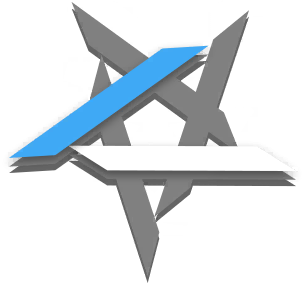
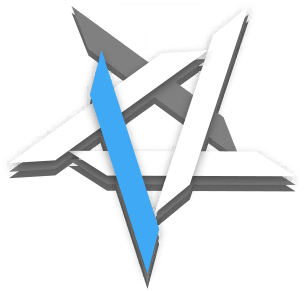
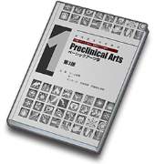
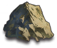
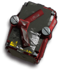
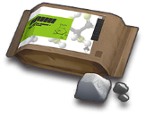
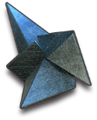
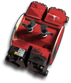
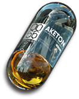

这是干员页整页样例（数据取自 gamedata 2.7.61 · char_010_chen）。用来验证设计系统在 PRTS 最复杂页面上的表现；立绘处以头像占位。
 CH'EN
CH'EN
普通攻击连续造成两次伤害
- 代号
- 陈 Ch'en · 编号 LM04
- 阵营
 龙门近卫局 / 龙门
龙门近卫局 / 龙门- 获取
- 标准寻访 · 公开招募 · 上线 2019.05.01
- 画师 / CV
- 唯@W / 石上静香 JP
- 信赖加成
- 200% 攻击 +50 防御 +50
HP 生命上限2880
ATK 攻击660
DEF 防御402
RES 法术抗性0
COST 部署费用23
BLOCK 阻挡数2
INTERVAL 攻击间隔1.3s
REDEPLOY 再部署70s
呵斥
 精英二 · 1级
精英二 · 1级在场时每4秒回复全场友方角色1点攻击/受击技力
持刀格斗术
精英二 · 1级攻击力+6%
（+1%），防御力+6%
（+1%），物理闪避+13%
（+3%）括号内为潜能5加成。
| 潜能 | 效果 | 潜能 | 效果 |
|---|
 | 部署费用-1 |  | 第二天赋效果增强 |
 | 再部署时间-4秒 |  | 部署费用-1 |
 | 攻击力+23 | | |
技能等级
切换等级查看数值（此处演示 7 与 M3）
下次攻击使用刀鞘砸向敌人，造成相当于攻击力260%的物理伤害，令命中目标晕眩1.5秒
对前方范围内最多
6名敌人造成相当于攻击力
410%的
物理和相当于攻击力
410%的
法术伤害
向周围寻找最近的敌方目标，对其发动10次连续斩击，每次造成相当于攻击力260%的物理伤害，并在最后一击时使目标晕眩3秒
技能升级材料
1 → 2
5
2 → 35
6
4
3 → 4 8
8
5
4 → 584
4
5 → 68
4
6 → 7 85
85
4
 专精一847
专精一847
ORIGINAL陈证章
陈证章
干员陈擅长于近身搏斗中对敌人造成多段杀伤。根据外勤部门决议，在外勤任务中划分为近卫干员，行使剑豪职责，特别颁发此证章，以兹证明。
SWO-X剑豪 · X型
罗德岛制式剑
| 阶段 | 属性 | 特性 / 天赋 | 材料 |
|---|
| 1 | 攻击+38 生命+150 | 特性追加：攻击时有 20% 概率造成 2 倍伤害 |  4 4 3 3 80K 80K |
| 2 | 攻击+55 生命+220 | 呵斥：在场时每3.5秒回复… | … |
| 3 | 攻击+70 生命+280 | 呵斥：在场时每3秒回复… | … |
解锁任务：使用陈击倒 15 名敌人；在
4-4 三星通关且陈击倒至少 4 名敌人
SWO-Y剑豪 · Y型
往昔时光
「这里荒废多久了？」陈站在废墟上远眺，身后的石碑上那些曾经……
| 解锁 | 技能 | 设施 | 效果 |
|---|
 精英零 精英零 | 近卫局督察 | 会客室 | 进驻会客室时，线索搜集速度+20%，且更容易获得龙门近卫局线索 |
| 精英二 | 督察·组长 | 会客室 | 进驻会客室时，线索搜集速度+30% |
基础档案Profile直接解锁
- 代号
- 陈
- 性别
- 女
- 战斗经验
- 四年
- 出身地
- 龙门
- 生日
- 7月7日
- 种族
- 龙
- 身高
- 168cm
- 矿石病感染情况
- 未公开
综合体检测试Physical Exam
物理强度优良
战场机动标准
生理耐受优良
战术规划优良
战斗技巧卓越
源石技艺适应性标准
客观履历Profile直接解锁
陈，龙门高级警司，龙门近卫局特别督察组组长，毕业于维多利亚皇家近卫学校，成绩优异，表现突出。在龙门近卫局供职期间，力主取缔龙门境内非法活动，对抗暴力犯罪和有组织犯罪，追缉武装逃犯与国际重犯等行动，并取得多项重大成果。
现作为特别人员协助罗德岛行动，并为现场提供战术指挥支援。
临床诊断分析Clinical Analysis信赖 25%
【应龙门近卫局要求，不予公开】
她是有来做体检啦，只是档案被拿走了，我这里可没留底。嗯？是龙门方面的要求啊。
——医疗干员R.T.
档案资料一Archive 1信赖 50%
此处内容在信赖不足时模糊显示，覆盖斜纹与解锁条件说明。文本仍在 DOM 中，可被搜索索引，但对读者不可选中。此处内容在信赖不足时模糊显示，覆盖斜纹与解锁条件说明。
档案资料二Archive 2信赖 100%
此处内容在信赖不足时模糊显示。此处内容在信赖不足时模糊显示。此处内容在信赖不足时模糊显示。
中文日本語English한국어
交谈1 CN
我一直觉得你们罗德岛很可疑，现在也一样。
晋升后交谈1
CN 精英一
精英一龙门的大街小巷我都走过。码头、招牌、坡道，那些风景印在我的心上。我永远都不会忘记。
晋升后交谈2
CN 精英二周边地区的局势并不稳定，虽然我会时刻保持警戒，但你也不能疏忽大意。
- ↑ 数据来源：gamedata 2.7.61 · character_table / skill_table / uniequip_table / handbook_info_table / charword_table。
本页面最后编辑于 2026年8月2日 (六) 00:12。本站文本采用 CC BY-NC-SA 4.0 授权。游戏素材版权归鹰角网络所有。


 专精二
专精二 8
8 专精三
专精三 6
6


 5
5 12
12 3
3
 4
4 4
4 6
6